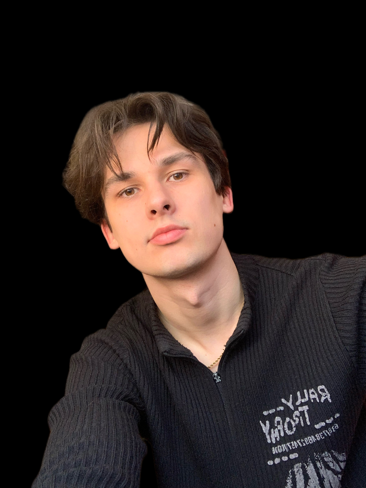
Od 6 lat zajmuję się projektowaniem graficznym. Wykonałem ponad 400 projektów dla firm i indywidualnych klientów. Specjalizuję się w nowoczesnym, przejrzystym designie, tworząc kreacje, które przyciągają oko i realnie wspierają działania biznesowe.
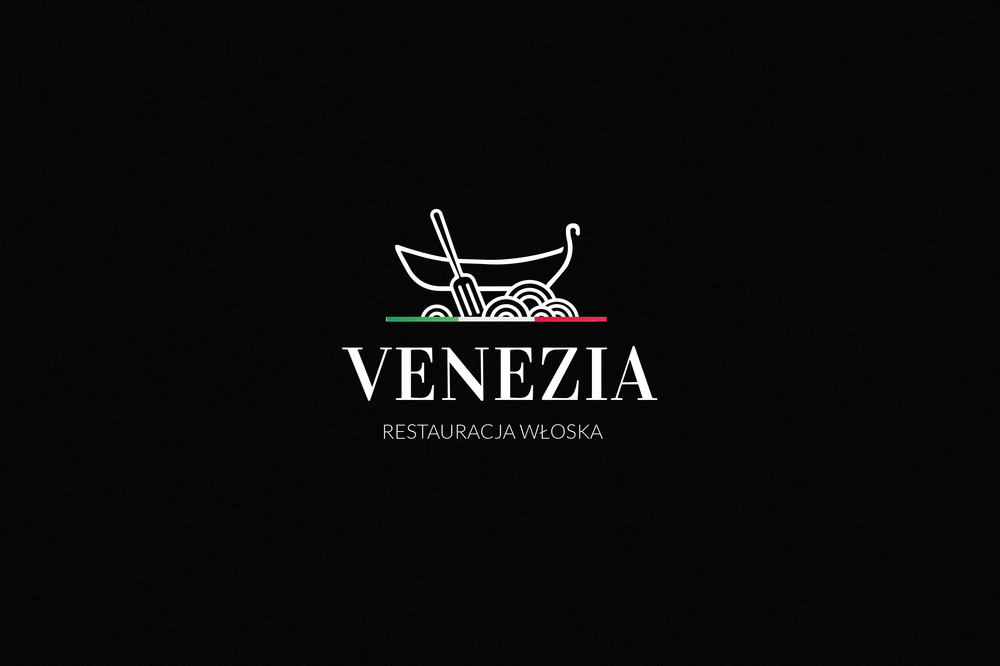
[Miejsce na grafikę: Cere Scrypt]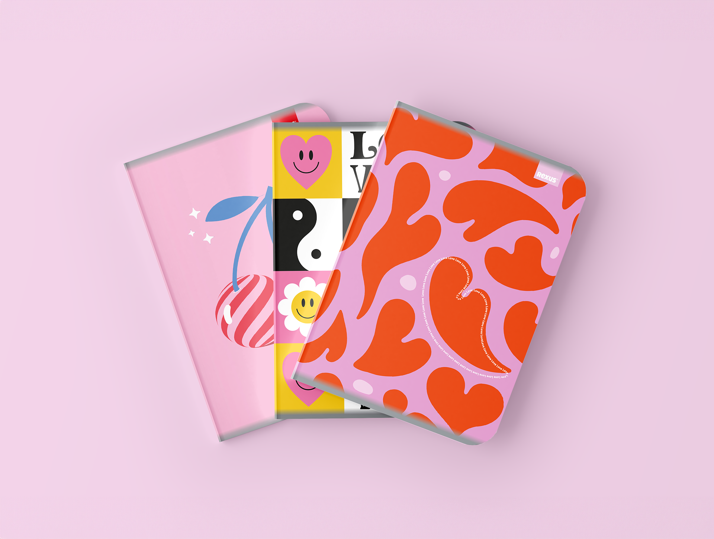
[Miejsce na grafikę: Uniwersytet Warszawski]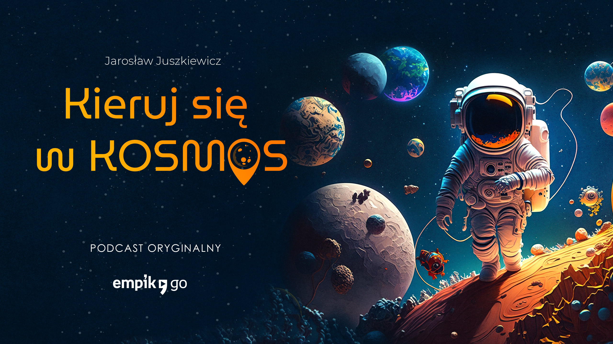
[Miejsce na grafikę: WarsawIce]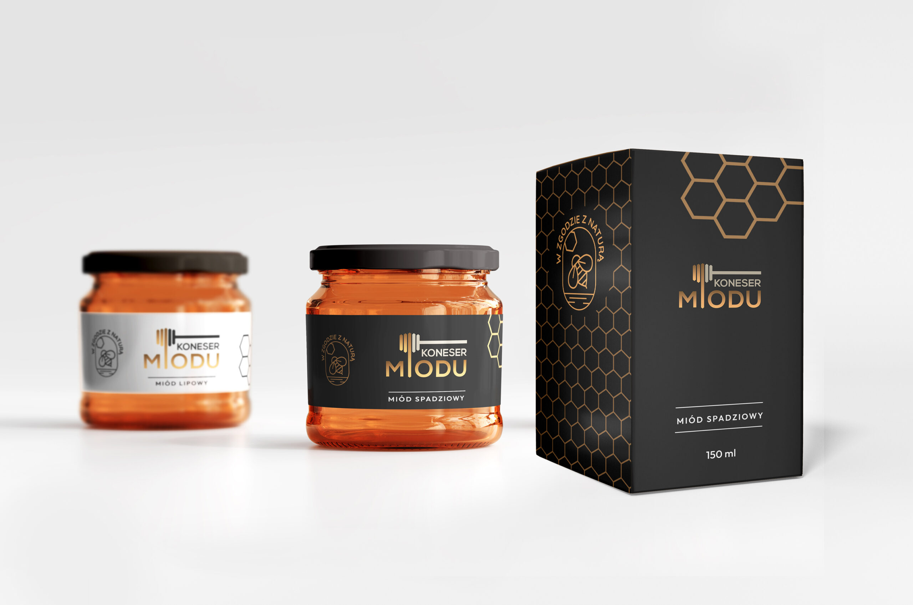
[Miejsce na grafikę: Projekt 4]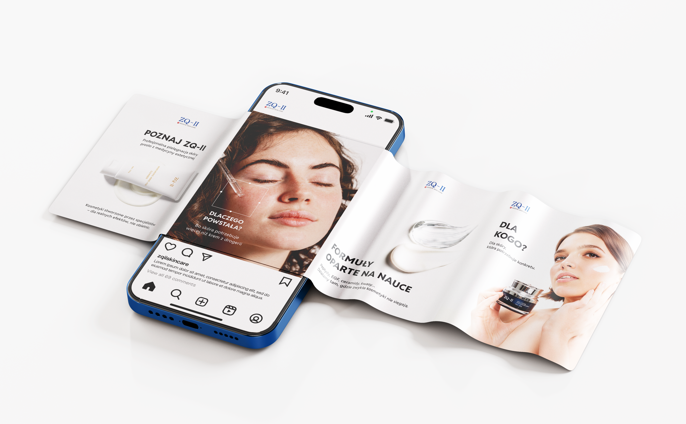
[Miejsce na grafikę: Projekt 5]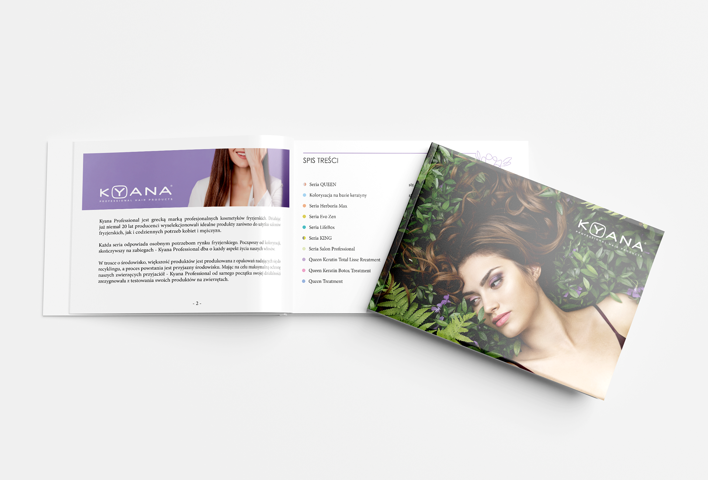
[Miejsce na grafikę: Projekt 6]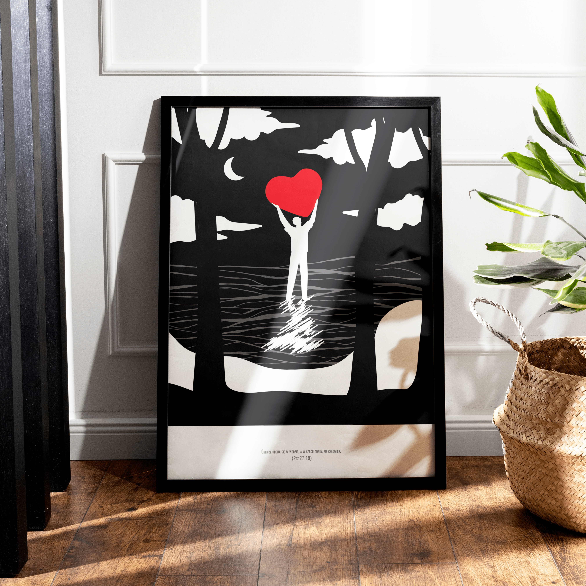
[Miejsce na grafikę: Projekt 7]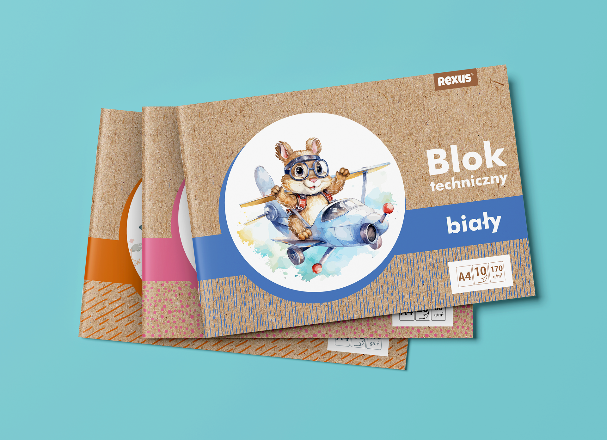
[Miejsce na grafikę: Projekt 8]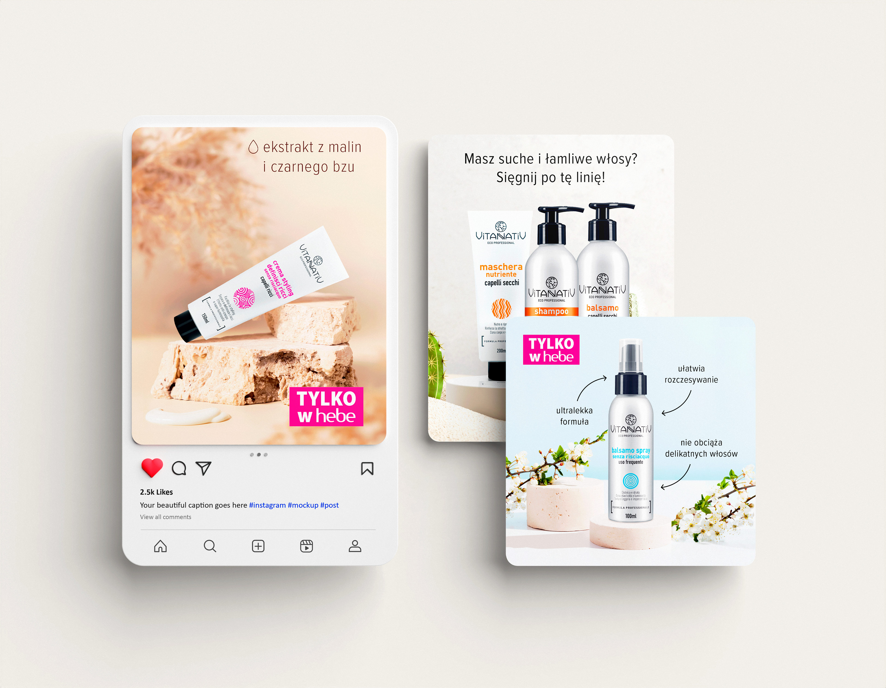
[Miejsce na grafikę: Projekt 9]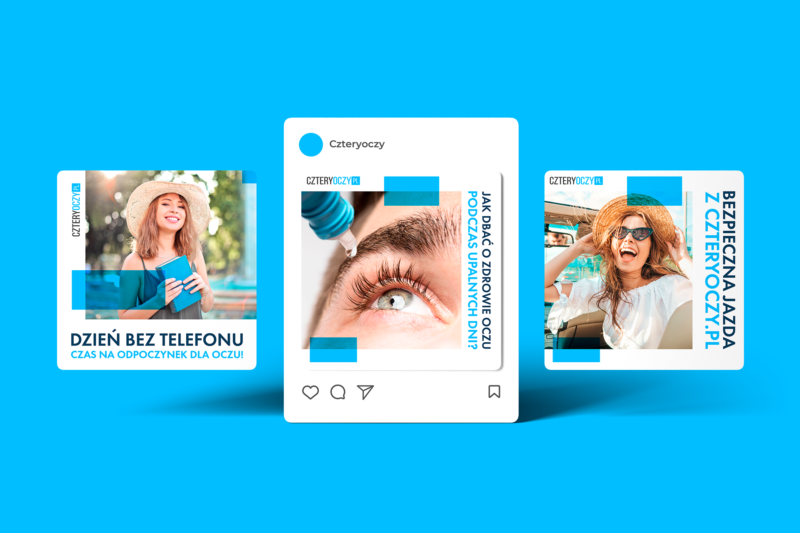
[Miejsce na grafikę: Projekt 10]